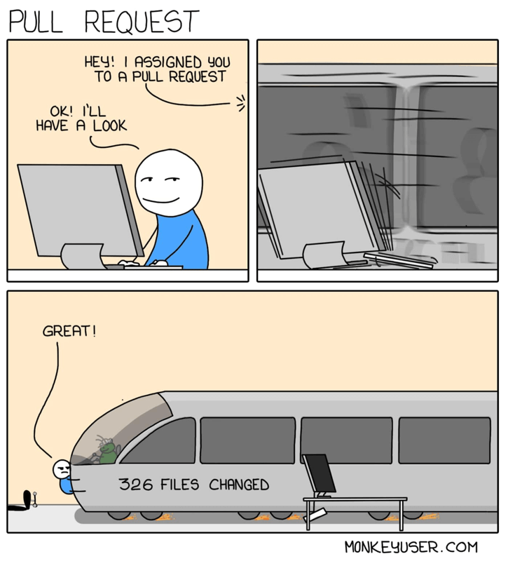
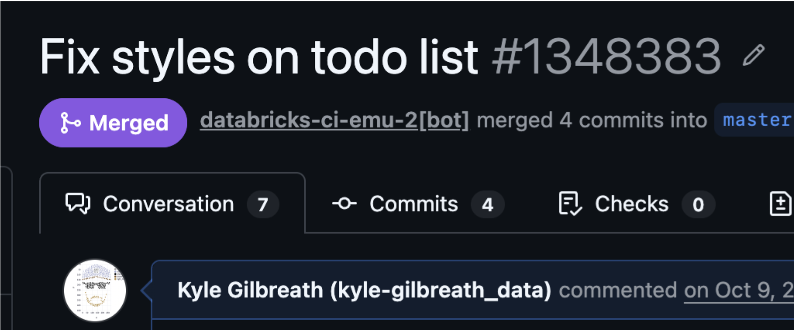
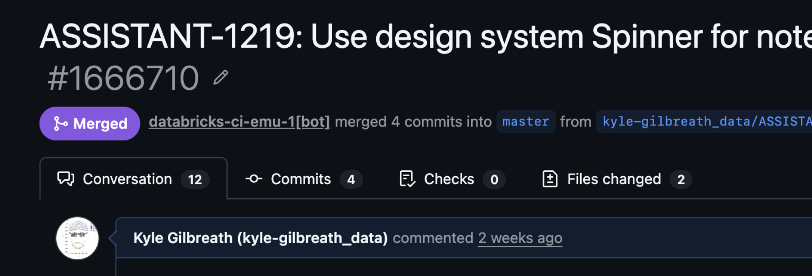
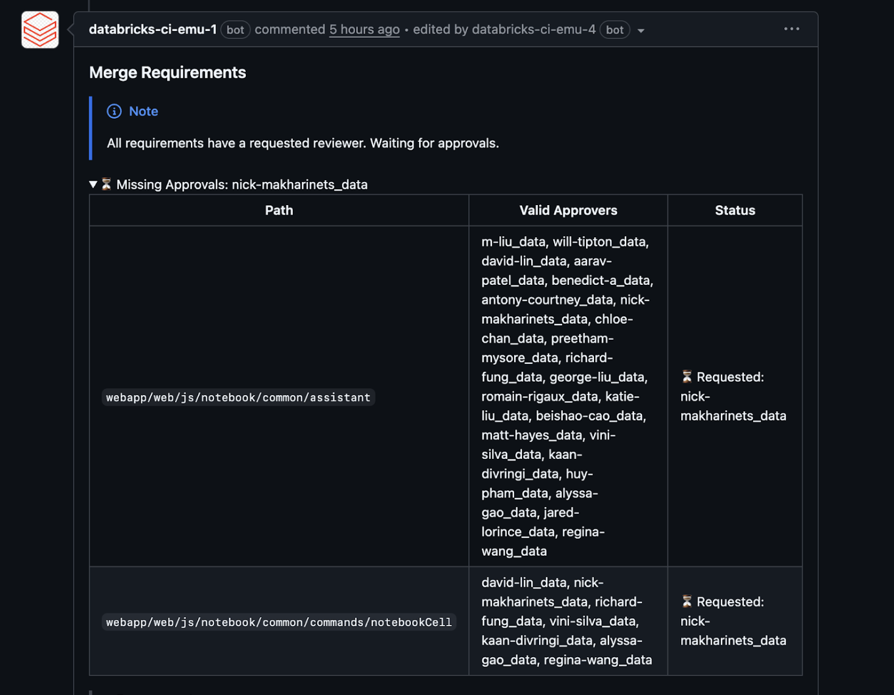
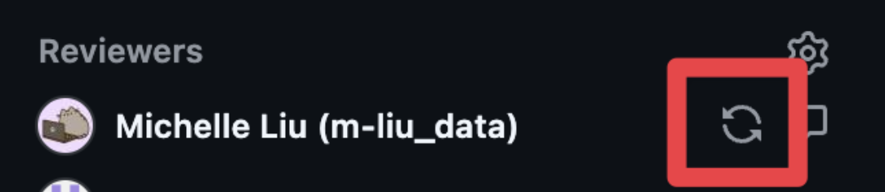

Don't break prod
PR Best Practices for Designers Shipping AI-Generated Code
Databricks Design · 2026
Why this matters
- Shipping code is real leverage and responsibility.
- AI lowered the barrier to push PRs. That doesn't mean we lower the quality bar.
- Eng teams are going to notice how we show up in this workflow.
Build engineering partnerships
- Give engineers a heads up before you start
- Before writing or prompting, align on approach
- Reviewers are much more generous when they're not surprised
One PR
One change
If you can't describe it in one sentence break it up. Think smallest
possible chunks to make it easier to review.

Keep it small
- Target ~500 lines maximum (go/smallpr)
- Reviewer effort scales quadratically with PR size
- 50-line PR: reviewed before the next meeting
- 500-line PR: goes on the todo list. Eventually.
You are the
first line of QA
Review your own PR preview and spot the obvious issues before putting
them in front of someone else.
Write a real description and title
- At a high level, what changed and WHY (Jira ticket helps here)
- Avoid paragraphs of text - bullet point your changes
- Any visual change requires a screenshot or video
Don't do this

Do this

PR title = future commit message. Make it clear enough to find in a git history 6 months from now - this helps with debugging and also finding code.
Assign the right reviewer
- Use Merge Advisories in GitHub to identify who to assign - don't guess
- Always use the Reviewers field, never Assignees (Databricks standard)
- Pick one primary reviewer, if it requires more than two it's too big
- SLA is 1 business day. Do not ping before that.
Merge Advisories tell you
exactly who to assign.

Go to the Checks tab, find the Merge Advisories bot comment. It lists valid approvers per path.
Your PR isn't done until its merged
-
After pushing new commits, re-request reviews

- Resolve comments yourself when obvious, let the reviewer resolve otherwise
- Respond to feedback constructively - ask clarifying questions
- Handle failed checks before triggering merges
Reviewing is a two-way street
- Respond within 1 business day
-
Nits shouldn't be blockers, use
nit:prefix, then approve anyway - When you do block, be constructive and specific about why
- Start a review before writing comments (batches all feedback into one notification)
YOU are still accountable
for AI-generated code
Remember
Think · Build · Own
“”
We've moved into
the era of single use plastic code
Remember
Cost · Scope · Future
“”
The cost of a feature isn't just the time to code it.
It's an obstacle to future expansion.
Quick links
go/code-review
Databricks PR policy
go/smallpr
Why small PRs matter
go/devportal
Track your PRs and reviewer queues
go/stacked-prs
Stacked PR workflow
go/whoownsit
Find owning team for a file or check
go/first-pr
Walkthrough to open your first PR